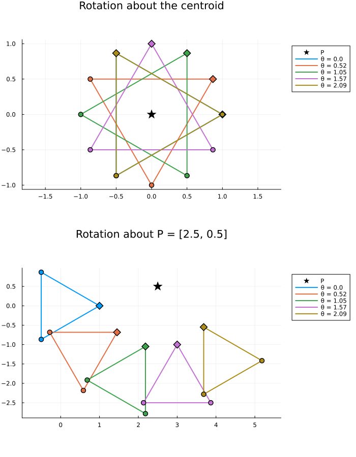

A Three-Agent Sheaf Whose Global Sections Are Equilateral Triangles
Introduction
We build a cellular sheaf on three agents in the plane whose global sections are exactly the equilateral triangles, and then use it to place the team in an equilateral triangle rotated by an angle $\theta$ about a point $P$.
The construction is short, but it shows a basic fact about network sheaves: a constraint that involves all three agents at once cannot be written as three pairwise constraints on positions alone. The fix is to give each agent a small amount of shared formation state in addition to its position.
using CellularSheaves
using LinearAlgebra
using Plots
using Random
Random.seed!(1)Random.TaskLocalRNG()Equilateral triangles form a linear subspace
Identify $\mathbb{R}^2$ with $\mathbb{C}$ and let $\omega = e^{2\pi i/3}$. Three points $x_1, x_2, x_3$ form a positively oriented (counter-clockwise) equilateral triangle exactly when
\[x_k = c + \omega^{k-1} z, \qquad k = 1, 2, 3,\]
for a centroid $c \in \mathbb{C}$ and a spoke $z = r e^{i\theta} \in \mathbb{C}$. The spoke is the vector from the centroid to agent 1: its argument $\theta$ is the orientation of the triangle and its modulus $r$ is the circumradius (side length $\sqrt{3}\,r$). The map $(c, z) \mapsto (x_1, x_2, x_3)$ is real-linear, so the equilateral triangles form a 4-dimensional linear subspace of $\mathbb{R}^6$. (Fixing the size $|z| = r$ is a nonlinear condition, so a sheaf of vector spaces includes every scale; we pin the scale later.)
In real coordinates, multiplying by $\omega^{k-1}$ is the rotation matrix $R_k = R(2\pi(k-1)/3)$.
rot(φ) = [cos(φ) -sin(φ); sin(φ) cos(φ)]
const n_agents = 3
const Rk = [rot(2π * (k - 1) / n_agents) for k in 1:n_agents]3-element Vector{Matrix{Float64}}:
[1.0 -0.0; 0.0 1.0]
[-0.4999999999999998 -0.8660254037844387; 0.8660254037844387 -0.4999999999999998]
[-0.5000000000000004 0.8660254037844385; -0.8660254037844385 -0.5000000000000004]Why positions alone are not enough
The simplest sheaf would give each agent the stalk $\mathbb{R}^2$ (its position) and put a linear constraint $A x_i = B x_j$ on each edge of the triangle graph. That cannot work. Any two points $x_i, x_j$ are two corners of some equilateral triangle, so on the subspace of equilateral triangles the pair $(x_i, x_j)$ takes every value in $\mathbb{R}^4$. A pairwise constraint that holds for every equilateral triangle must therefore hold for every pair of points, so it constrains nothing. "Equilateral" is a genuinely three-way condition.
The sheaf: positions plus a shared spoke
We give agent $k$ the vertex stalk $\mathcal{F}(v_k) = \mathbb{R}^4$ holding its position $x_k$ and its own copy of the spoke $z_k$. On each edge $e = \{j, k\}$ the edge stalk is $\mathcal{F}(e) = \mathbb{R}^4$ and agent $k$ reports the centroid it would infer and the spoke it believes in:
\[\mathcal{F}_{v_k \trianglelefteq e} \begin{pmatrix} x_k \\ z_k \end{pmatrix} = \begin{pmatrix} x_k - R_k z_k \\ z_k \end{pmatrix}, \qquad \mathcal{F}_{v_k \trianglelefteq e} = \begin{pmatrix} I_2 & -R_k \\ 0 & I_2 \end{pmatrix}.\]
A 0-cochain is a global section when the two ends of every edge agree, so all agents share one spoke $z$ and one inferred centroid $c = x_k - R_k z$. Global sections are therefore exactly $x_k = c + R_k z$: the equilateral triangles.
restriction(k) = [I(2) -Rk[k]; zeros(2, 2) I(2)]
function equilateral_sheaf()
F = EuclideanSheaf{Float64}(fill(4, n_agents))
for (j, k) in [(1, 2), (2, 3), (3, 1)]
add_sheaf_edge!(F, j, k, restriction(j), restriction(k))
end
F
end
F = equilateral_sheaf()A network sheaf with 3 vertex stalks and 3 edge stalks.
The space of global sections is 4-dimensional
Global sections are the kernel of the sheaf Laplacian $L = \delta^\mathsf{T}\delta$ (Hansen & Ghrist, Toward a spectral theory of cellular sheaves, 2019). We compute a basis with nullspace_ldlt.
V = nullspace_ldlt(F)
size(V, 2)4The four dimensions are the centroid $c \in \mathbb{R}^2$ and the spoke $z \in \mathbb{R}^2$. We can build a section directly from $(c, \theta, r)$ and check that the coboundary $\delta$ sends it to zero.
triangle_section(c, θ, r) = reduce(vcat, [[c + Rk[k] * (r * [cos(θ), sin(θ)]); r * [cos(θ), sin(θ)]] for k in 1:n_agents])
positions(x) = [x[4(k-1)+1:4(k-1)+2] for k in 1:n_agents]
x = triangle_section([1.0, 2.0], π / 7, 1.5)
norm(coboundary_map(F) * x)3.718322457049255e-16The three positions are pairwise at distance $\sqrt{3}\,r$.
side_lengths(ps) = [norm(ps[1] - ps[2]), norm(ps[2] - ps[3]), norm(ps[3] - ps[1])]
side_lengths(positions(x)), sqrt(3) * 1.5([2.5980762113533156, 2.5980762113533156, 2.5980762113533165], 2.598076211353316)Rotating the triangle by θ about a point P
To place the team we add a fourth commander vertex whose stalk $\mathbb{R}^4$ holds a prescribed centroid and spoke $(c, z)$. It is joined to every agent; its restriction map is the identity, and the agent's side is the same map $\mathcal{F}_{v_k \trianglelefteq e}$ as before. Fixing the commander's value and solving for the rest is a harmonic extension problem (harmonic_extension), and here the extension is unique.
Rotating a reference triangle with centroid $c_0$ and spoke $z_0$ by $\theta$ about an arbitrary pivot $P$ gives another equilateral triangle, with
\[c(\theta) = P + R(\theta)(c_0 - P), \qquad z(\theta) = R(\theta) z_0.\]
When $P = c_0$ the triangle spins in place; otherwise its centroid travels on a circle about $P$. In both cases only the commander's 4-vector changes, and the agents' positions follow from the sheaf.
const commander = n_agents + 1
function commanded_sheaf()
F = EuclideanSheaf{Float64}(fill(4, n_agents + 1))
for (j, k) in [(1, 2), (2, 3), (3, 1)]
add_sheaf_edge!(F, j, k, restriction(j), restriction(k))
end
for k in 1:n_agents
add_sheaf_edge!(F, k, commander, restriction(k), Matrix{Float64}(I, 4, 4))
end
F
end
Fc = commanded_sheaf()
function rotated_formation(Fc, c0, z0, P, θ)
c = P + rot(θ) * (c0 - P)
z = rot(θ) * z0
xh, null_basis = harmonic_extension(Fc, Dict(commander => [c; z]))
positions(Vector(xh)), size(null_basis, 2)
end
c0 = [0.0, 0.0]
z0 = [1.0, 0.0]
P = [2.5, 0.5]
ps, free_dims = rotated_formation(Fc, c0, z0, P, π / 4)
free_dims0The pinned solution has no free directions left, and it is still equilateral:
side_lengths(ps)3-element Vector{Float64}:
1.732050807568877
1.7320508075688763
1.732050807568877Picture: rotating about the centroid and about an external point
function triangle_plot(c0, z0, P, θs; title)
plt = plot(; aspect_ratio=:equal, legend=:outertopright, title=title, size=(700, 500))
scatter!(plt, [P[1]], [P[2]]; marker=:star5, markersize=10, color=:black, label="P")
for (i, θ) in enumerate(θs)
ps, _ = rotated_formation(Fc, c0, z0, P, θ)
xs = [p[1] for p in ps]; ys = [p[2] for p in ps]
plot!(plt, [xs; xs[1]], [ys; ys[1]]; color=i, linewidth=2, label="θ = $(round(θ; digits=2))")
scatter!(plt, xs, ys; color=i, markersize=5, label="")
scatter!(plt, xs[1:1], ys[1:1]; color=i, marker=:diamond, markersize=7, label="")
end
plt
end
θs = range(0, 2π / 3; length=5)
plot(triangle_plot(c0, z0, c0, θs; title="Rotation about the centroid"),
triangle_plot(c0, z0, P, θs; title="Rotation about P = $(P)"); layout=(2, 1), size=(700, 900))
The diamond marks agent 1. Rotating by $2\pi/3$ about the centroid returns the same triangle with the agents relabelled, which is why the last and first triangles in the top panel coincide as sets.
Recovering θ and P from noisy positions
Running the construction in reverse: suppose the agents report noisy positions and spokes. The nearest global section (the orthogonal projection onto $\ker \delta$, nearest_global_section) is the closest equilateral triangle, and we read the formation parameters off it. Because $R_1 + R_2 + R_3 = 0$, the centroid is the mean of the positions.
x_true = triangle_section([1.0, -0.5], 0.6, 1.2)
noisy = x_true + 0.1 * randn(length(x_true))
x_fit = Vector(nearest_global_section(F, noisy))
c_fit = sum(positions(x_fit)) / n_agents
z_fit = x_fit[3:4]
θ_fit = atan(z_fit[2], z_fit[1])
(c_fit, θ_fit, norm(z_fit))([1.0706583718739326, -0.4917249727822203], 0.6570110695372071, 1.152375590619302)The fitted triangle is equilateral up to round-off even though the input was not:
side_lengths(positions(noisy)), side_lengths(positions(x_fit))([1.9998444843483758, 1.8219516520017975, 1.9249662977036424], [1.995973072354824, 1.9959730723548244, 1.9959730723548246])